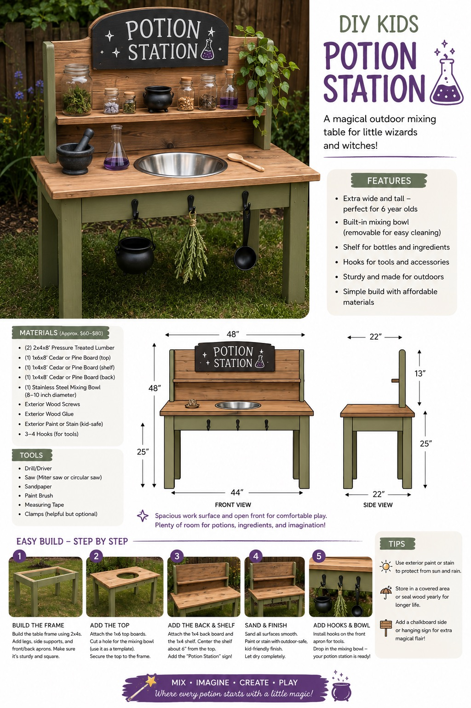
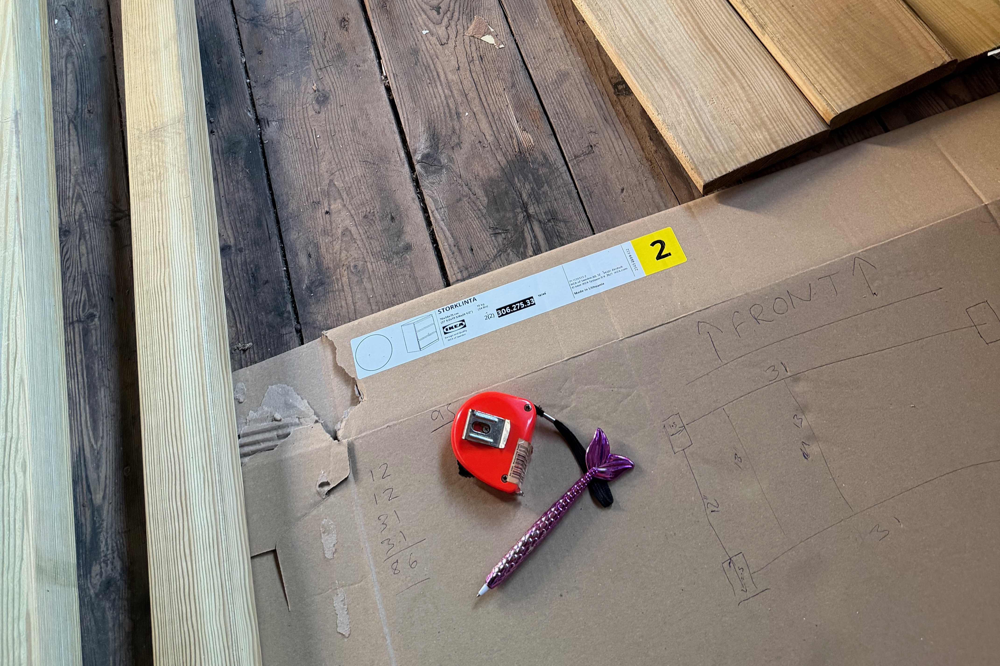
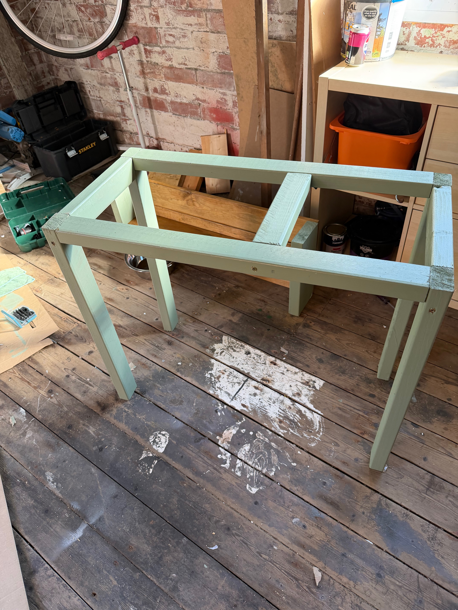
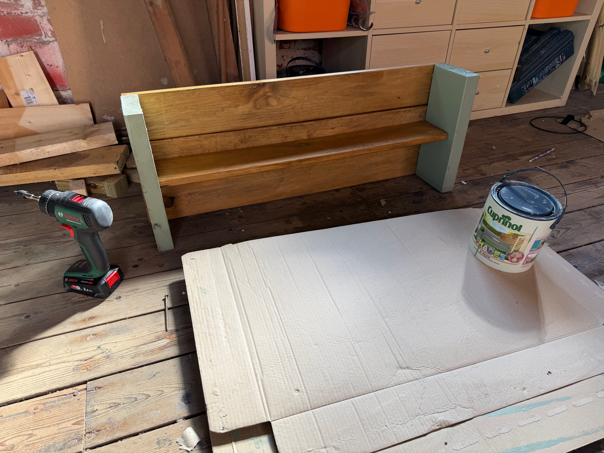
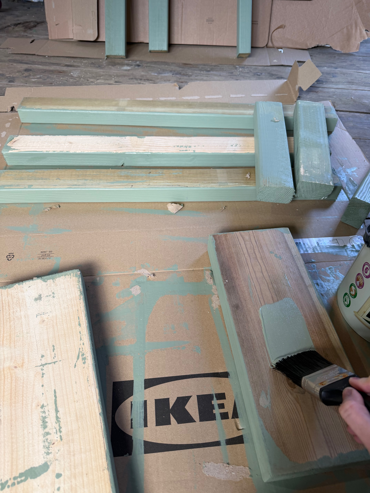

The idea
One of the things I love about having an allotment is that it gives us a space to do things that we wouldn't necessarily do at home.
I wanted to make something that would encourage my daughter to spend more time there and give her something that was completely her own.
The idea was a potion station.
Somewhere she could collect leaves, petals, water, sticks and whatever other mysterious ingredients she could find, and turn them into potions.
Obviously, these would be completely imaginary potions. Although, judging by some of the ingredients that ended up in them, I wasn't particularly keen to find out what they actually did.
Asking AI for inspiration
I decided to use AI to help me come up with some ideas for the design.
This was useful for getting inspiration and thinking about different ways the station could be laid out. It gave me somewhere to start when I was trying to turn a vague idea into something I could actually build.

However, AI also had some... questionable suggestions.
One particularly memorable suggestion involved cutting a hole through the structure without properly supporting the wooden slats around it.
Which sounded like a fantastic way to discover that gravity still works.
It was a good reminder that AI can be incredibly useful for inspiration, but it isn't a substitute for actually thinking through whether something is structurally sound.
I took the ideas that were useful, ignored the ones that weren't, and worked out the design myself.
Planning with the world's most expensive stationery
Before cutting anything, I needed to work out the measurements.
This is where things became slightly ridiculous.
I have an entire cupboard full of stationery and an entire garage full of tools.
Pens. Pencils. Notebooks. Paper. Measuring things. Probably enough stationery to open a small office supply shop.
So naturally, when it came time to plan my woodworking project, I used my daughter's Mermaid pen and some leftover cardboard.

Honestly, it worked surprisingly well.
The cardboard gave me something physical to work with, and drawing everything out helped me understand how the different pieces needed to fit together before I started cutting wood.
Measuring the most difficult component
One of the hardest parts of the entire project wasn't the woodworking.
It was measuring my daughter.
I needed to work out the ideal height for the station, which sounds simple enough until you try to get a child to stand still long enough to take an accurate measurement.
Apparently, standing completely still for approximately thirty seconds is an unreasonable request.
After several attempts, I eventually had some measurements I could work with.
Designing something specifically for her height made the project feel much more personal, though. It wasn't just a generic children's play station - it was something designed for her to use at our allotment.
Reclaimed wood and questionable confidence
I wanted to use reclaimed wood for some of the project rather than buying everything new.
Apart from being a good way to reuse materials, I liked the idea that the finished potion station would have a bit of character to it.
Of course, reclaimed wood also comes with its own surprises.
Different sizes, old marks, imperfections and the occasional moment of wondering exactly what I'd got myself into.
But that was part of the fun.
Actually building the thing
This was my first real attempt at making something like this, so there was a lot of learning as I went.


Measuring, cutting, checking, changing things, checking again and trying not to make any expensive mistakes became the general process.
Learning to use a mitre saw
One of the more intimidating parts of the build was getting to grips with the mitre saw.
I'm fairly comfortable learning new things, but there is something about a large, very noisy blade spinning extremely quickly that makes you suddenly question every decision that led you to this point.
I also discovered that I find it surprisingly difficult to stop myself from closing my eyes when making the cut.
Which is obviously exactly what you want when trying to make an accurate cut.
I took my time, followed the safety instructions and gradually became more comfortable using it.
It was another reminder that learning a new skill often involves being a little uncomfortable at first.
Green. So much green.
Once the cutting was finished, it was time to paint.
Green seemed like the obvious choice for something that was going to live at the allotment and be used for making potions.
What I hadn't anticipated was quite how many coats of green paint I would need.
One coat.
Still patchy.
Two coats.
Better.
Three coats.
Surely that's enough?
Apparently not.
By the end, I felt like I'd painted the thing approximately one million times.

The important bits
Once the main structure was finished, I added the details that would make it feel like an actual potion station rather than a small green wooden structure.
Little spaces for ingredients, places to put containers and areas where my daughter could mix everything together.
The goal wasn't to make it perfect.
It needed to feel like somewhere she could experiment, make a mess and use her imagination.
A major success
And, ultimately, it worked.
The potion station has given my daughter something to do at the allotment that is completely hers.
She's become much more involved in what we're doing there, and suddenly trips to the allotment aren't just about helping with the gardening.
They're about collecting mysterious ingredients and making increasingly elaborate potions.
The most important potion so far?
One that would apparently turn us into Minions.
I'm still waiting to see whether it works.
Although, after all the work that went into building the station, I'm calling the project a major success either way.
What I learned
- AI is great for inspiration, but questionable structural advice still needs questioning.
- Reclaimed materials can make a project more interesting, not just cheaper.
- Measuring a moving child is harder than measuring wood.
- Cardboard and a Mermaid pen are perfectly acceptable design tools.
- Green wood paint apparently comes in approximately one million necessary coats.
- Learning a new skill is much easier when the end result has a purpose you genuinely care about.
- The best projects don't always end up looking exactly like the original plan.